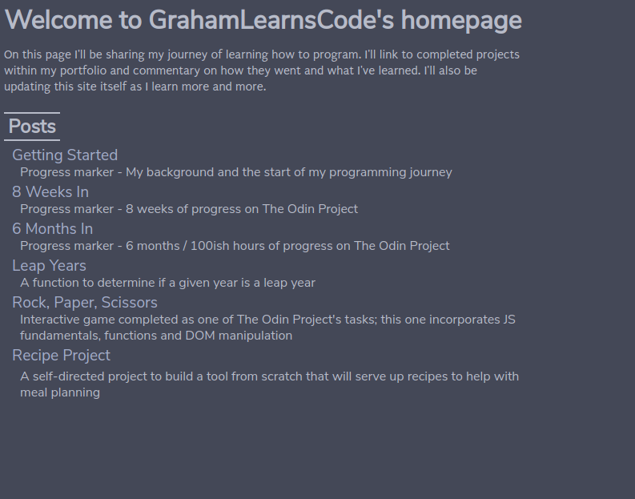

Jun 8th, 2020
It's been 6 months since I started this journey. My original goal was 3 and a half hours per week (aiming for 30 mins per day, doing more or less or none on any given day as and when but trying to keep to that level throughout a week) of study and practice. If I've stuck to that I'll be at 91 hours now...while I know there are certainly weeks when I've done a lot more, there are definitely some where I've done less. Especially lately; I'm in week 13 of exclusively working from home due to covid-19 which means here in the UK we're around week 11 of lockdown. Motivation has been harder to come by during this time. It's only a ballpark figure anyway, any one block of time might be more or less productive than another, etc. Call it 90 hours, plus or minus 10%.
So what have I done during that time? Well, I'm 83% of the way through Odin's Web Development 101 course. So that's some basic Linux, Git/GitHub, HTML, CSS and a whole lot of Javascript. I've also built this website, using all of the above. It's currently up on Github Pages. It currently looks like this:
(knowledge or skills that are new to me since the previous progress marker):